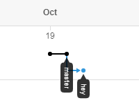
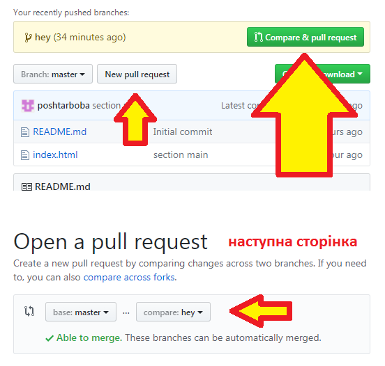
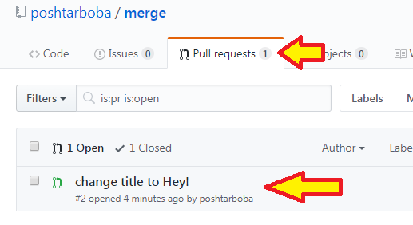

Ця практика навчить вас використовувати Git у колективних проектах. Вважайте, що кожну гілку цього проекту робить окрема людина. Будемо вчитися зливати (об'єднувати) гілки, вирішувати конфлікти.
Виконуйте завдання поступово. Відмічайте виконані завдання кліком по кнопці біля цифри.
Будьте дуже уважними! Якщо щось зробите невірно, пропустите - доведеться завдання виконувати спочатку.
Для цього видаліть репозиторій з GitHub і папку html з папки проекту в себе на комп'ютері.
Відстежуйте помилки після виконання кожної команди. Частіше перевіряйте статус: git status.
Завдання представлені у двох варіантах: коротко і детально. У другому варіанті розписані усі дії.
git status
git add .
git status
git commit -m "section main"
git status
// проконтролюйте, щоб не було помилок, повинно писати:
// nothing to commit, working tree clean
git push
Оновлюйте сторінку клавішами Ctrl+Shift+R ("жорстке" перезавантаження з очищенням тимчасового кешу), не користуйтесь клавішою F5 чи іконкою перезавантаження сторінки біля строки URL браузера - це "м'яке" перезавантаження, без очищення кешу.

Графічне відображення гілки у GitHub
Для того, щоб зміни попали в основну гілку master - потрібно зробити Pull Request. Для цього на головній сторінці проекту нажміть велику зелену кнопку "Compare & pull request". Якщо такої не бачите - шукайте невелику білу "New pull request".
Перевірте, щоб навпроти base: була обрана гілка master, а навпроти compare: - ваша гілка hey. Натисніть велику зелену кнопку "Create pull request". На наступній сторінці не нажимайте кнопку "Merge pull request".

Кнопки створення пул-реквеста і порівняння гілок
Пул-реквест - це запит на об'єднання гілок. Учасник проекту виконує свою роботу, заливає (пушить) на сервер і коли робота готова (пушити можна багато разів) - розробник пул-реквестом "просить" свого керівника добавити виконану роботу в гілку master.

Пул-реквест очікує мержа (з'єднання) з гілкою master
Тепер в роботу включається тімлід (team leader), технічний керівник проекту, досвідчений розробник.
Керівник перевіряє чи все гаразд, чи немає помилок, і в разі відсутності зауважень об'єднує гілки. Якщо ж щось не так - він пише коментар і не приймає ваш пул-реквест, вам потрібно виправити помилки, доробити те, що вказано в коментарі.